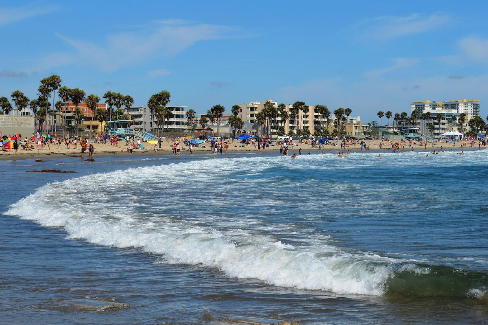
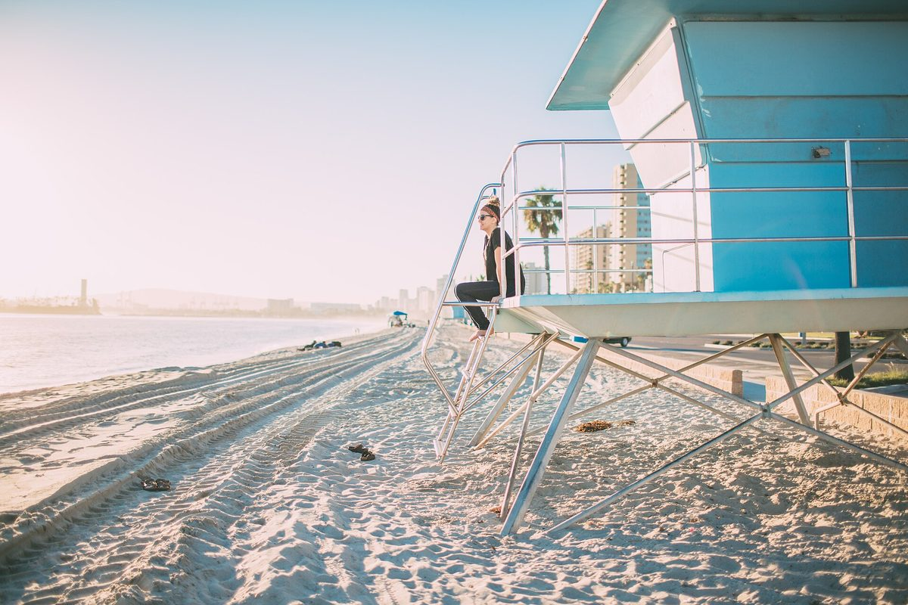
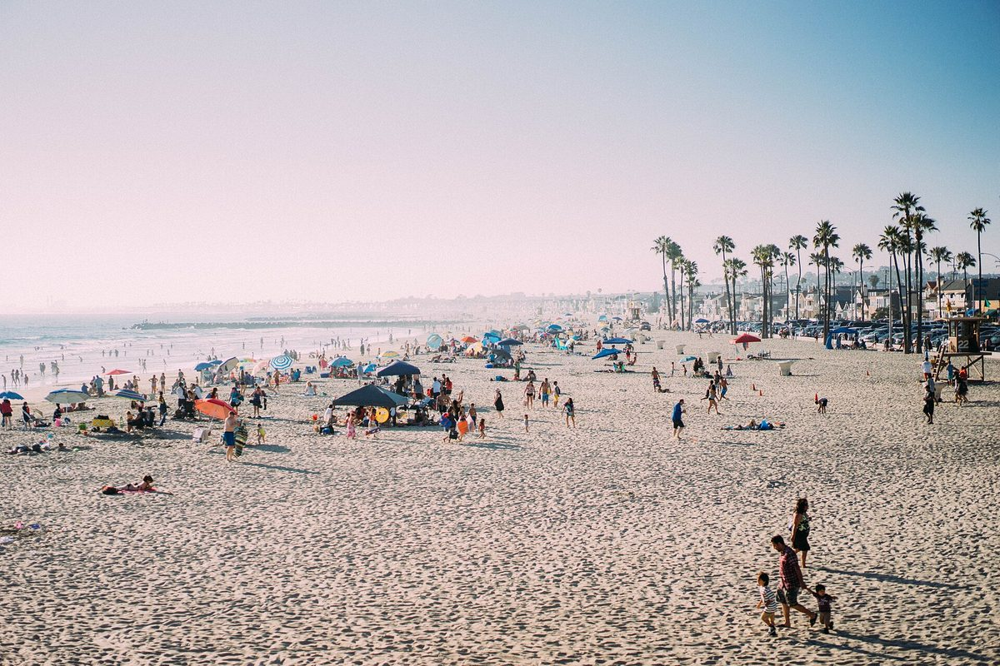

Beaches
10 beaches · 58 photos
Beaches
10 beaches · 58 photos

Santa Monica State Beach
Ferris wheel, broad sandy shore and ocean views.
Santa Monica State Beach
Ferris wheel, broad sandy shore and ocean views.Start at the pier and take in the shoreline from above before heading down to the sand. Google Maps photos and directions ↗
- Parking
- Central beach lots near the pier (1N–3N and 1S–3S).
- Cost
- November rates are $8 per entry on weekdays and $12 on weekends. Valid disabled placards pay half the posted rate. Rates ↗
- Bike path
- Take the paved Marvin Braude Bike Trail south to Venice. Route info ↗



Venice Beach
Palm trees, the boardwalk and the skatepark.
Venice Beach
Palm trees, the boardwalk and the skatepark.Start near Windward Avenue for the boardwalk and skatepark. Come back toward sunset for palm silhouettes. Google Maps photos and directions ↗
- Parking
- South City Lot at 2100 Ocean Front Walk, near the skatepark and Muscle Beach.
- Cost
- Published winter rates are $5 before 9 a.m. and $9 after. Check the posted holiday rate. Rates ↗
- Bike path
- Ride the paved Marvin Braude Bike Trail north to Santa Monica. Route info ↗


Manhattan Beach
Wide sand, volleyball courts and the paved Strand beneath the beachfront homes.
Manhattan Beach
Wide sand, volleyball courts and the paved Strand beneath the beachfront homes.Google Maps photos and directions ↗
- Parking
- Pier lots at the foot of Manhattan Beach Boulevard.
- Cost
- $3.50/hour at the pier lots. Downtown city lots are $2.50/hour. Rates ↗
- Bike path
- Follow the Strand south to Hermosa Beach. Route info ↗


.jpg)

Hermosa Beach
A wide volleyball beach, with Pier Plaza opening straight onto the Strand.
Hermosa Beach
A wide volleyball beach, with Pier Plaza opening straight onto the Strand.Google Maps photos and directions ↗
- Parking
- Lot A at 1101 Hermosa Ave, near Pier Plaza.
- Cost
- $3.50/hour at Lots A, B and C. Street meters are $3/hour. Rates ↗
- Bike path
- The Strand runs north toward Manhattan Beach and south toward Redondo. Route info ↗


Redondo Beach
The pier and marina sit beside a long stretch of beachfront south of the harbor.
Redondo Beach
The pier and marina sit beside a long stretch of beachfront south of the harbor.Google Maps photos and directions ↗
- Parking
- Pier and Plaza parking structures or the Marina parking lot.
- Cost
- The city listed $2.25/hour for the pier and marina lots effective August 20, 2026. Rates ↗
- Bike path
- The Marvin Braude route continues south along the beachfront toward Torrance Beach. Route info ↗



Long Beach
Palm trees, lifeguard towers and a long sandy shore.
Long Beach
Palm trees, lifeguard towers and a long sandy shore.Start at Belmont Shore for views of the sand from the waterfront path. Google Maps photos and directions ↗
- Parking
- Granada Beach Lot at 5100 E Ocean Blvd.
- Cost
- $2/hour from 8 a.m. to 6 p.m., including holidays. Rates ↗
- Bike path
- The paved Shoreline Pedestrian Bikepath runs west from Belmont Shore toward downtown. Route info ↗


Huntington Beach
Pier views, surfers and a wide stretch of sand.
Huntington Beach
Pier views, surfers and a wide stretch of sand.Start at the pier for a view of the surf and the beach in both directions. Google Maps photos and directions ↗
- Parking
- Main Promenade garage at 200 Main St., a short walk from the pier.
- Cost
- Published garage rate is 90 minutes free, then $1 per 20 minutes, up to $15/day. Check posted rates. Rates ↗
- Bike path
- Pick up the paved beachfront bike path by the pier and ride south toward Huntington State Beach. Route info ↗



Newport Beach
Palm-lined oceanfront and a classic pier.
Newport Beach
Palm-lined oceanfront and a classic pier.Start at Newport Pier near McFadden Square and follow the oceanfront path. Google Maps photos and directions ↗
- Parking
- West Ocean Front Lot at 2100 W Oceanfront, by Newport Pier.
- Cost
- $4.10/hour. Check the space’s time limit. Valid placards park free in this lot. Rates ↗
- Bike path
- The shared paved path from Newport Pier to Balboa Pier is 1.74 miles each way. Route info ↗


Corona del Mar State Beach
A sandy cove framed by rocky bluffs.
Corona del Mar State Beach
A sandy cove framed by rocky bluffs.Visit Lookout Point for a view over the cove. Google Maps photos and directions ↗
- Parking
- Main Beach pay lot at the bottom of the beach access road.
- Cost
- October–April weekdays $1.80/hour. Weekends $3/hour early and late or $4.80/hour from 9 a.m. to 6 p.m. Daily cap $18.15. Placard holders pay the same rate. Rates ↗
- Bike path
- For a ride, head to the Newport Pier–Balboa Pier path across the harbor. Ocean Boulevard above the cove is a street route. Route info ↗


Laguna Beach
Rocky coves, palms and views from the bluffs.
Laguna Beach
Rocky coves, palms and views from the bluffs.Start at Main Beach for ocean views from the boardwalk. Google Maps photos and directions ↗
- Parking
- Broadway Lot (Lot 1) or Peppertree Lot (Lot 2) near Main Beach.
- Cost
- $3/hour in the off-season, with a 3-hour limit. Rates ↗
- Bike path
- Main Beach’s boardwalk is for walking. For a paved beachfront ride, use the Newport Pier–Balboa Pier path. Route info ↗